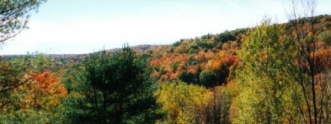
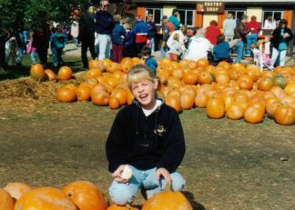

Things To Do in the Fall
The Leaves

In the fall, there are many things to do in and around Ellicottville.; There is the Ellicottville Fall Festival, which regularly draws a large crowd. In fact, Holiday Valley opens their ski lifts during the festival weekend for people to ride up and walk down the slopes. It is quite a beautiful experience.
Mountain Biking and Hiking
(5 minutes from the chalet)
Little Rock City is also quite fun to hike around at in the fall. Sometimes the leaves hide the mud holes that "city boys" usually step into. They'll tell you, it doesn't smell good, but it give you something to talk about! Besides a little hidden mud, stick to the path, and enjoy the rocks.
Pumpkinville and the Haunted Hay Rides
(20 minutes from the chalet)

Design by: Scott (scott@dickersonchalet.com)